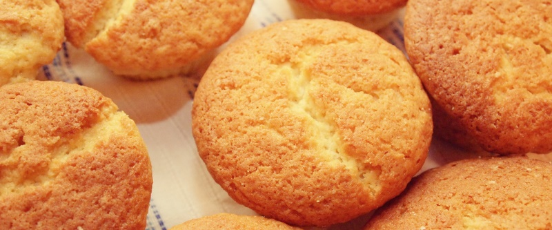

приготовление:
-
Заранее достать из холодильника 270 г сливочного масла и 120 мл кефира и дать им согреться до комнатной температуры. Разогреть духовку до 175 °C. Взбивать мягкое сливочное масло 3 минуты, затем добавить 550 г сахара и продолжать взбивать, пока масса не посветлеет и не станет пышной.
-
Продолжая взбивать, добавить 80 мл растительного масла, 60 мл рома или коньяка и ванилин. Убавить скорость миксера и по одному ввести 4 яйца и 2 желтка, перемешивая после каждого добавления. Отдельно просеять 350 г муки и перемешать венчиком с 1 ч. л. соли и 1 ч. л. разрыхлителя.
-
Поочерёдно добавить в сливочную массу половину мучной смеси, половину кефира, оставшуюся мучную смесь и оставшийся кефир. После каждого добавления перемешать до однородности. Отдельно взбить 120 мл сливок для взбивания (33%) до мягких пиков, затем аккуратно вмешать их лопаткой в тесто.
-
Смазать формочки сливочным маслом, присыпать мукой и разлить по ним тесто. Выпекать 40 минут. Дать кексам остыть в формочках 10–15 минут, затем аккуратно вынуть и полностью остудить.